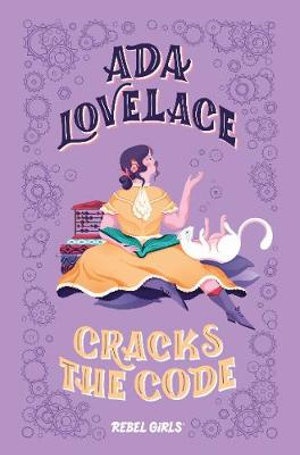
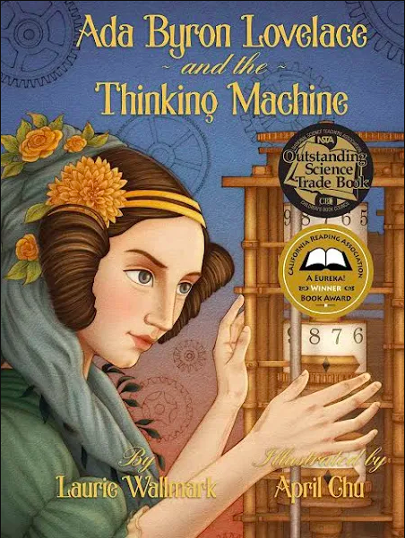
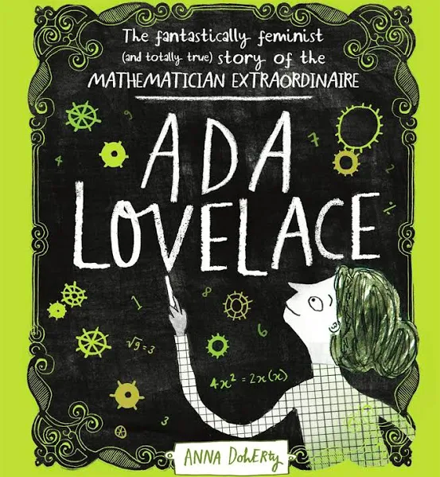
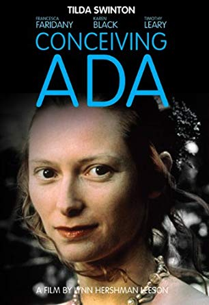
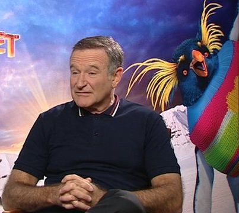

Put it all on red!
You’re never too smart for a gambling problem. Lovelace had a difficult time controlling herself at the horse tracks; she once lost £3,200 pounds (a fortune in her time) on a single race. At one point things got so bad, Lovelace sold her family diamonds just to keep afloat.
Flying horses...
One of Lovelace’s earliest blueprints was for a horse-powered flying machine. The 12-year-old Ada told her mother about a plan to “make a thing in the form of a horse with a steam engine in the inside so contrived as to move an immense pair of wings, fixed on the outside of the horse.”
Named in honor...
During the 1970s, the U.S. Department of Defense developed a high-order computer programming language to supersede the hundreds of different ones then in use by the military. When U.S. Navy Commander Jack Cooper suggested naming the new language “Ada” in honor of Lovelace in 1979, the proposal was unanimously approved. Ada is still used around the world today in the operation of real-time systems in the aviation, health care, transportation, financial, infrastructure and space industries.
Books about Lovelace that Joel has likely read...
Many books have been written about Lovelace's life and contributions to how we know computers today... but has Joel read them all???
  Joel may not know...
The 2013 docu-drama 'Lovelace' was inspired by Ada Lovelace.
Joel may also not know...
The character Ada Lovelace from the 1997 indie-fantasy, 'Concieving Ada', was played by Robin Williams due to his superb voice performance as Lovelace from the 2006 hit Happy Feet.
 